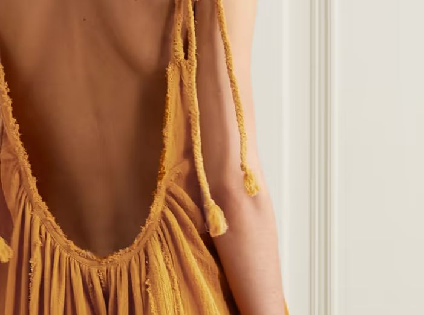
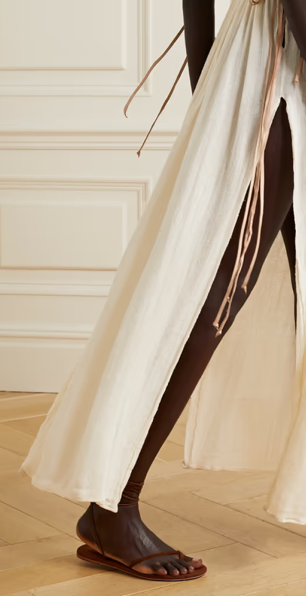
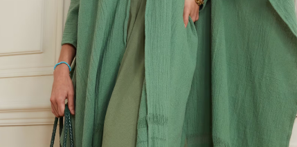
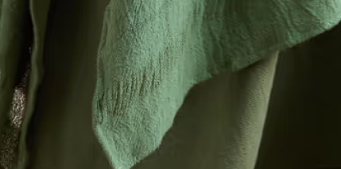
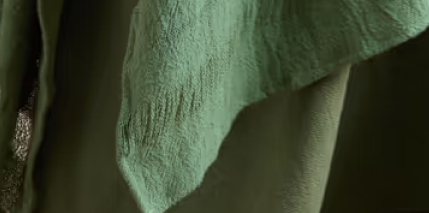
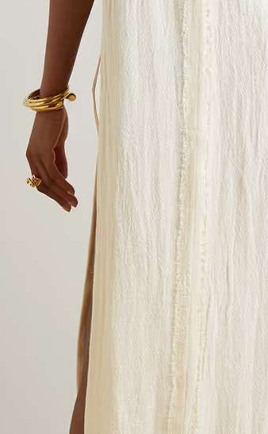

Organic Cotton
1.Caravana
Paiche cotton-gauze
jumpsuit
jumpsuit


Kiuic draped leather-trimmed cotton-gauze maxi dress
About Caravana
Caravana’s versatile, free-spirited and Mayan-inspired resort wear is handmade in Mexico. The brand uses a homemade dye manufactured in Mexico, which means less of an environmental impact on nature.
Caravana’s versatile, free-spirited and Mayan-inspired resort wear is handmade in Mexico. The brand uses a homemade dye manufactured in Mexico, which means less of an environmental impact on nature.



Ikal frayed
cotton-gauze cape

Net Sustain Huntochac leather-trimmed frayed cotton-gauze tunic
From Caravana:
“All the fabrics we use are natural fibers. Caravana’s materials range from 100% cotton, cow leather and pheasant, rooster and/or duck feathers.”
"The fabric used is natural and its cotton is processed in Mexico. Caravana’s suppliers of raw materials have created the looms of jute, gauze, handmade blanket, etc, and we’ve been one of the first companies in the Yucatan Peninsula to be able to state that these products are made with 100% Mexican raw material.”